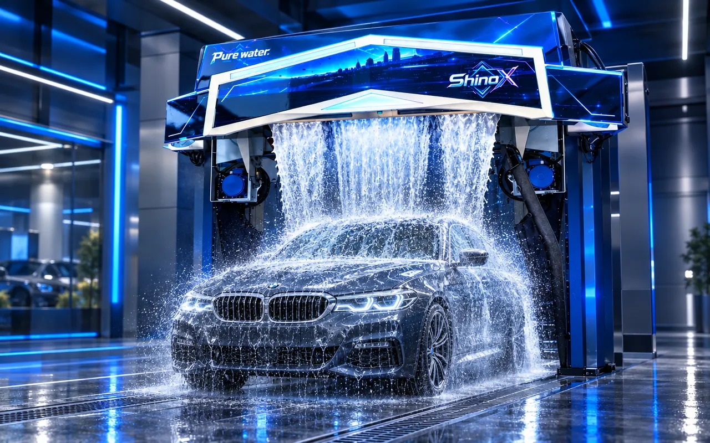

360° 無接觸沖洗
304 不鏽鋼旋轉臂，量測車長並沖洗底盤。
M9 / SINGLE-ARM 360° TOUCHLESS
單臂 360° 環繞沖洗，Standard、Plus、Premium 三種配置。
快洗約 2 分鐘、精洗約 6 分鐘；每台約 0.5–0.8 kWh、100–200 L 水。可 24 小時自助營運。

01 / OVERVIEW
ShinoX M9 是單臂 360° 無接觸全自動水刀洗車機，可搭配自助洗車設備規劃無人自助洗車場。304 不鏽鋼旋轉臂環繞車身沖洗，搭配車長量測、底盤沖洗與 28 秒環形沖洗；伺服驅動行走與旋轉，超音波偵測車輛位置。
提供 Standard、Plus、Premium 三種配置：Plus 與 Premium 加上側沖與側吹風乾，Premium 另配頂部擺動風乾，並採 22 kW 水泵、70–120 kgf/cm² 沖洗壓力。
304 不鏽鋼旋轉臂，量測車長並沖洗底盤。
行走與旋轉皆伺服驅動，超音波偵測車輛。
快洗 2 分鐘、精洗 6 分鐘，環形沖洗 28 秒。
每台 0.5–0.8 kWh、100–200 L 水，計量泵配比藥劑 20–50 ml。
電子防撞、汽車級電泳塗裝、熱浸鍍鋅框架。
24 小時自助、APP 管理、遠端操作、故障自診斷、防凍排水。
02 / FUNCTIONS
Under-chassis wash
先沖掉底盤與輪框泥沙。
Pre-soak foam
軟化分解頑固髒汙。
High-pressure wash
單臂環繞整車沖洗。
Foam coverage
濃密泡沫包覆全車。
Foam waterfall
泡沫如瀑布從龍門淋下。
Coating protection
增亮、增豔、防潑水。
Power drying
4 顆 5.5 kW 風機吹乾車身水珠。
03 / WASH PROCESS
洗車流程可設定 6 種洗車模式、最多 12 道洗程工序，功能可依需求配置，流程可完全客製：快洗約 2 分鐘、精洗約 6 分鐘。Premium 配頂部擺動風乾；Plus 與 Premium 另有側沖與側吹風乾。
04 / SPECIFICATIONS
| 項目 | M9 Standard | M9 Plus | M9 Premium |
|---|---|---|---|
| 水泵電機 | 18.5 kW | 18.5 kW | 22 kW |
| 風機 | 5.5 kW × 4（固定式） | 5.5 kW × 4（固定式） | 5.5 kW × 4（擺動式） |
| 電源 | 380 V・50/60 Hz | 380 V・50/60 Hz | 380 V・50/60 Hz |
| 沖洗壓力 | 70–100 kgf/cm² | 70–100 kgf/cm² | 70–120 kgf/cm² |
| 行走與旋轉驅動 | 伺服驅動（縱向行走與旋轉） | ||
| 項目 | M9 Standard | M9 Plus | M9 Premium |
|---|---|---|---|
| 電源／水泵電機 | 380 V・18.5 kW・50/60 Hz | 380 V・18.5 kW・50/60 Hz | 380 V・22 kW・50/60 Hz |
| 沖洗壓力 | 70–100 kgf/cm² | 70–100 kgf/cm² | 70–120 kgf/cm² |
| 風機 | 固定式・5.5 kW × 4 | 固定式・5.5 kW × 4 | 擺動式・5.5 kW × 4 |
| 頂部擺動風乾 | — | — | ● |
| 側吹風乾 | — | ● | ● |
| 側沖 | — | ● | ● |
| 出貨重量／體積 | 2350 kg／10 m³ | 2600 kg／13 m³ | 2600 kg／13 m³ |
| 安裝尺寸（長 × 寬 × 高） | 7500 × 3800 × 3350 mm | ||
| 最大車輛尺寸（長 × 寬 × 高） | 5600 × 2400 × 2050 mm | ||
| 軌道 | 7500 mm × 5 mm・低阻力防滑軌道 | ||
| 控制與驅動 | 嵌入式 CPU＋工業 PLC 雙核心・縱向行走與旋轉伺服驅動 | ||
| 偵測與安全 | 超音波車輛偵測・電子防撞・漏電保護 | ||
| 沖洗系統 | 360° 量測沖洗・304 不鏽鋼旋轉臂・環形沖洗 28 秒・車長量測與底盤沖洗 | ||
| 藥劑系統 | 計量泵自動配比・304 不鏽鋼泵・20–50 ml | ||
| 洗車模式與工序 | 可客製化 6 種洗車模式、12 道洗程工序 | ||
| 洗車時間 | 快洗 2 分鐘・精洗 6 分鐘 | ||
| 耗用 | 每台 0.5–0.8 kWh・水 100–200 L | ||
| 塗裝與框架 | 汽車級電泳塗裝・100 × 100 × 4 mm 熱浸鍍鋅框架 | ||
| 自助營運 | 24 小時營運・自助付費系統（付款方式可設定）・多語語音 | ||
| 保固 | 1 年 | ||
● 標準配備 — 無此配置
05 / CONSUMPTION
| 用電 | 0.5–0.8 kWh／台 |
|---|---|
| 用水 | 100–200 L／台 |
| 藥劑 | 20–50 ml／台（計量泵自動配比） |
耗用數字為每台車參考值，依洗程設定、車型與現場條件而有差異。
06 / STANDARD EQUIPMENT
| 控制與電氣 | 工業 PLC・工業級電氣元件・超音波與光電感測器・伺服驅動與 IP67 旋轉馬達・7 吋 HMI 觸控螢幕 |
|---|---|
| 運動機構 | 拖鏈與電纜・同步皮帶・304 不鏽鋼防水軸承・氣動閥・PA6 射出成型輪 |
| 水路與藥劑 | 銅／不鏽鋼高壓泵・3125 PSI 高壓管與耐酸鹼密封・316 不鏽鋼旋轉接頭・316L 硬化 15° 噴嘴・計量泵・304 不鏽鋼藥劑泵 |
| 結構 | 304 不鏽鋼旋轉臂、底盤沖洗、控制櫃、管路與扣件・鍍鋅加戶外粉體塗裝電控箱與泵箱・PE 成型前後面板 |
07 / OPTIONS
由單臂升級為雙臂，方案請洽詢。
不鏽鋼外觀與結構套件。
三種配置皆為選配。
三種配置皆為選配。
三種配置皆為選配。
三種配置皆為選配。
側沖、側吹風乾與頂部擺動風乾依配置而定，請見上方規格比較表。
08 / CONFIGURATION
單臂與雙臂方案可洽詢，請提供場地尺寸與營運需求，由專人評估合適配置。
LINE @shinox 洽詢配置09 / WARRANTY
ShinoX M9 Standard、Plus、Premium 三種配置皆提供 1 年保固。
10 / VISIT & SURVEY
台南有 3 處可預約看實機運作，也可安排專人到場免費現勘。
洗車機價格怎麼估？預約免費現勘 ↗ ShinoX 為洗車機廠商，台南 洗車機、高雄 洗車機需求都可預約看實機。
看機請先透過 LINE @shinox 或電話 0979-666-302 預約時間。